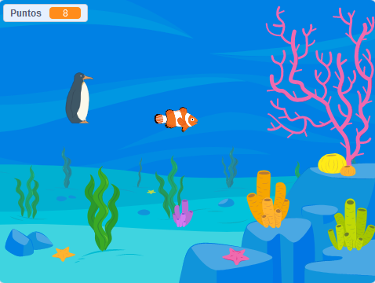
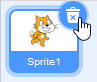
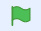
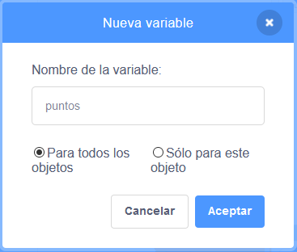
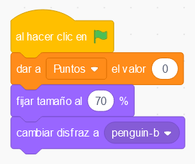
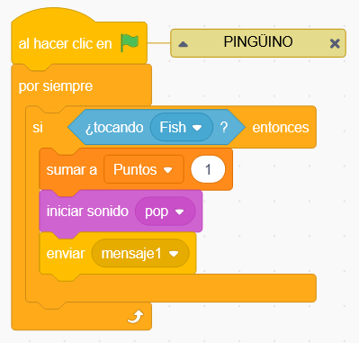
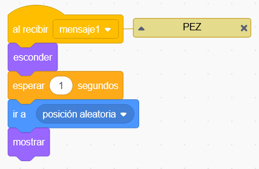

6. Eating fishes¶
En esta práctica vamos a realizar un juego que consiste en perseguir peces con un pingüino para que se los coma.
{kind=link}
We start the Scratch editor.
Click language button
 upper menu bar and select English.
upper menu bar and select English.Pulsamos el botón de tutoriales y luego el botón de "Juegos".
Seleccionamos el tutorial "Crear un juego de persecución" y lo visualizamos.
En este tutorial veremos el funcionamiento básico del programa.
Delete the cat sprite by pressing on the icon of the trash can.

Ahora vamos a realizar el programa. Primero seleccionamos un fondo para nuestro juego. En el botón seleccionar fondo
 escogemos
uno del fondo del mar "Underwater".
escogemos
uno del fondo del mar "Underwater".A continuación añadimos un pez. Pulsando seleccionar objeto
 en la pestaña de Animales
seleccionamos un pez que nos guste.
en la pestaña de Animales
seleccionamos un pez que nos guste.Ahora vamos a mover el pez por la pantalla de forma aleatoria. Para conseguirlo programamos las siguientes instrucciones.

Press the green flag  to test the operation of the program.
Añadimos un nuevo personaje que va a perseguir al pez para comérselo. Pulsando seleccionar objeto
en
la pestaña de Animales seleccionamos un pingüino.Creamos una nueva variable. En el botón variables
 pulsamos "crear una variable"
y la llamamos puntos.
pulsamos "crear una variable"
y la llamamos puntos.Las siguientes instrucciones inician los puntos a cero, reducen el tamaño del pingüino para hacer más difícil el juego y escogen uno de los disfraces disponibles para el pingüino.
Por último vamos a añadir movimiento al pingüino. Cada vez que se pulse una tecla de flecha, la posición del pingüino cambiará en un paso.

Press the green flag to test the operation of the program.
Como podemos comprobar, el pingüino puede perseguir al pez pero todavía no se lo puede comer. Para que pueda comerse al pez será necesario añadir algunas instrucciones más.
Seleccionamos al pingüino y en la pestaña de código añadimos el siguiente programa.
Ahora seleccionamos al pez y en la pestaña de código añadimos el siguiente programa.
Press the green flag to test the operation of the program.
{kind=link}
{kind=link}
{kind=link}
Ejercicios¶
Añade más disfraces de peces al pez actual. Cada vez que el pingüino se coma al pez, aparecerá un pez distinto.
Para conseguirlo utiliza la instrucción "siguiente disfraz" en el lugar adecuado.
Añade un personaje nuevo que reste puntos al comérselo. Por ejemplo puede ser una medusa o "jellyfish".
El programa será similar al de comer un pez, pero en esta ocasión restará puntos en vez de sumar.
El nuevo personaje que resta puntos debe aparecer cuando hayan pasado 10 segundos desde el inicio de la partida.
Añade un nuevo personaje, por ejemplo un tiburón, que se coma al pingüino al tocarle. En este caso el pingüino desaparece y la partida se acaba.
El nuevo personaje que resta puntos debe aparecer cuando hayan pasado 20 segundos desde el inicio de la partida.